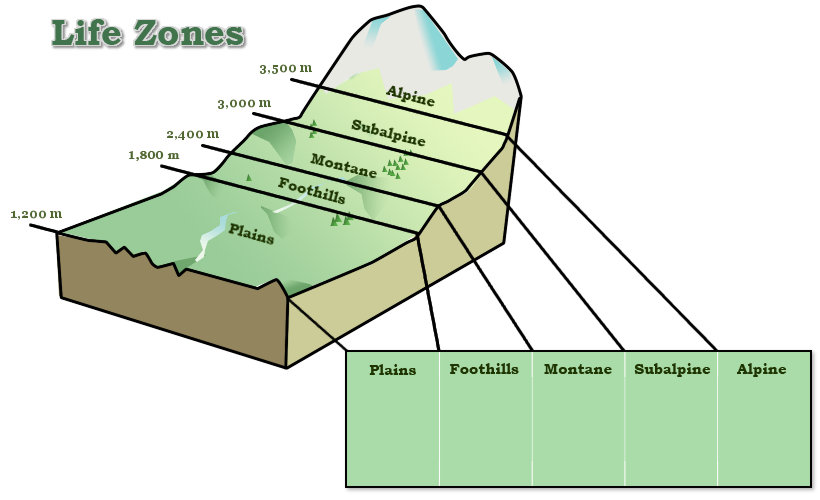
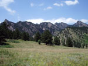
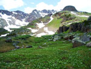

| Average Temperature in degrees Celcius | ||||
|---|---|---|---|---|
| 10.6 | 9 | 5.5 | 2.5 | -3.5 |
| Mean Annual Precipitation (mm) | ||||
| 380 | 450 | 600 | 750 | 1,000 |


The life zone concept was developed as a tool to categorize areas with similar biotic communities. There are several approaches used to define different life zones; some focus on the predominant vegetation of an area (grassland, oak forest and Sonoran Desert, for example), while others focus on the climatic factors, such as mean annual temperature and precipitation, that are associated with changes in plant communities. The use of climatic factors to determine the type of community that should exist within a defined climatic region assumes that, while species may differ within similar life zones across different continents, these communities will be composed of species that share similar adaptations to deal with similar climatic conditions.
A popular way of defining different life zones in Colorado is based on their elevation. Because elevation has a strong effect on the mean annual temperature and precipitation of an area, it heavily dictates the types of organisms that can live within the area. In sum, as elevation increases, the mean annual temperature declines and average precipitation increases. On the east facing slopes of Colorado there are five generally accepted life zones based on their elevation. While elevation provides a useful starting point for defining where life zones may begin and end, latitude, topography and whether an area is west or east facing, can all influence.
The plains of Colorado occur from about 1,200-1,500m and are dominated by buffalo (Buchloe dactyloides) and blue gramma (Bouteloua gracilis) grasses. Yucca (Yucca glauca) and prickly pear cati (Opuntia sp.) are also common in this life zone. Water that flows from the mountains forms riparian environments in the plains that are dominated by cotton wood trees and willow. Long cold winters suppress any growth until spring and during the summer, large storm systems bring water and disturbances such as fires to the plains. Roughly 40% of the land in Colorado is found within the Plains lifezone.
-top-

Andrea DixonThe foothills of Colorado range from roughly 1,800-2,400m and these areas have a noticeably different flora and fauna than that found on the plains. Here you find the ponderosa pines (Pinus ponderosa) woodlands as well as thick shrubby areas. This zone has a blend of numerous grasses, like the plains, as well as a high number and diversity of wild flowers like the life zones found at higher elevations. This life zone is a good habitat for snakes and lizards as well as elk and deer.
-top-
The montane life zone of Colorado ranges from 2,400-3,000m and is characterized by cool temperatures, long-lasting snow and dense forests. In this life zone you can find elk, marmots, shrews, bobcats and coyotes. Typical trees found in this zone include aspen (Populus tremuloides), and ponderosa (Pinus ponderosa) and lodgepole pines (Pinus contorta). In addition several ferns can be found here, as well as numerous grass species and wild flowers, including the Colorado columbine (Aquilegia caerulea), the state flower. In recent years, the ponderosa pines in this zone have been heavily hit by the mountain pine beetle.
-top-

Peter RejcekIn Colorado the subalpine is found at 3,000-3,500m. This life zone is perhaps most famous for the ski runs that cross through it in some regions. While some aspens may still be present, this life zone is dominated by a variety of pines and many species of wild flowers. Twisted pines and ribbon forests can be found in areas that have high winds. The upper range of the subalpine is defined by the presence of a distinct tree-line, an area above which trees do not grow.
-top-
The alpine life zone in Colorado begins above tree-line, which is typically above 3,500m. In the alpine, the mean temperature of the coldest month is less than 10°C.The cold temperatures and high winds in this region and the snow cover that can last for all but 6-8 weeks of the year make this area inhospitable to trees and many plant species. Forbs and other short statured plants and grasses, growing seasons in this region are typically short in stature but tend to have a large investment in below ground biomass. The few pines that may be found in the alpine are often stunted and twisted.
-top-
{kind=link}
{kind=link}